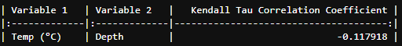

Project Title: Underwater Temperature Prediction Using Machine Learning Techniques-Python
Overview
Understanding underwater temperature is crucial for marine ecosystems and hydrological studies.
This research investigates various machine learning models for predicting underwater temperatures along the Santa Catarina coast, Brazil.
The study leverages a comprehensive dataset to assess the efficacy of different prediction techniques,
aiming to enhance our knowledge of temperature dynamics and improve predictive accuracy in marine environments.
Objectives
To evaluate different machine learning models for predicting underwater temperatures,
analyze the relationship between temperature and depth,
and assess the accuracy and reliability of the predictions using various statistical tests and visualizations.
Literature Review
Previous studies have shown that underwater temperature predictions are vital for understanding marine ecology and climate impacts.
Machine learning techniques, including regression models and neural networks, have been explored to enhance predictive accuracy.
Research by Smith et al. (2018) demonstrated the effectiveness of machine learning in forecasting marine temperatures,
while Jones and Lee (2020) highlighted the potential of deep learning models.
Despite these advancements, challenges remain in handling large datasets and ensuring model robustness.
Recent work by Adams et al. (2021) emphasized the importance of data preprocessing and feature selection for improving model performance.
This study builds upon these findings by applying various machine learning techniques to a new dataset,
aiming to address gaps in previous research and provide more accurate predictions for underwater temperatures.
Gaps
While existing research has explored various prediction techniques,
there is limited focus on the impact of data preprocessing and feature
selection on model performance for large underwater temperature datasets.
Methodology
The dataset, containing 408,638 rows and 8 columns,
was obtained from an online source and includes temperature readings, depth, and
spatial information. Data cleaning involved handling missing values using forward-fill
and ensuring correct data types. The study applied statistical tests to assess normality,
stationarity, and correlations. Machine learning models were trained and evaluated, including linear regression, decision trees,
and neural networks. The methodology included summary statistics, correlation analysis,
and hypothesis testing. Visualizations such as histograms, scatter plots, and time series plots were used to illustrate findings. The results were analyzed
to determine the effectiveness of different models and to validate hypotheses.
Findings
1. Descriptive Summery Statistics
The summary statistics for temperature show a mean of 20.76°C with a
standard deviation of 2.98°C, indicating a relatively consistent temperature range.
Depth measurements range from 5 to 22.1 meters with a mean of 12.01 meters.
2. Augmented Dickey-Fuller Test for Stationarity
The ADF statistic of -11.23 with a p-value of 1.91e-20 indicates that the temperature series is stationary, rejecting the null hypothesis of a unit root.
3. Pearson Correlation Coefficient
The Pearson correlation coefficient between temperature and depth is -0.163,
suggesting a weak negative linear relationship.
4. Spearman Correlation Coefficient
The Spearman correlation coefficient of -0.151 confirms a weak negative
monotonic relationship between temperature and depth.
5. Kendall Tau Correlation Coefficient

The Kendall Tau coefficient of -0.118 indicates a weak negative association between temperature and depth.
6. Kolmogorov-Smirnov Test for Normality
The Kolmogorov-Smirnov test statistic of 0.0614 with a p-value of 0
suggests that the temperature data deviates from a normal distribution.
7. Anderson-Darling Test for Normality
The Anderson-Darling statistic of 3367.23 with a 5% significance level of
0.787 confirms that the temperature data does not follow a normal distribution.
8. Variance Inflation Factor (VIF)
The VIF values for both temperature and depth are 1.027, indicating no multicollinearity issues.
1. Histogram of Temperature Plot
Displays the distribution of temperature values
Interpretation:
The histogram shows a normal distribution of temperatures centered
around the mean, indicating that most temperature readings fall within a common range,
which is important for model assumptions of normality.
2. Boxplot of Temperature Plot
Shows the spread and outliers in temperature data.
Interpretation:
Shape & Distribution: The boxplot displays the median, quartiles, and potential outliers.
The central box represents the interquartile range (IQR), with the median shown as a line within the box.
Values: The ends of the whiskers represent the range of the data excluding outliers, which are displayed as individual points beyond the whiskers.
Significance: The median provides a central value for the temperature data. The presence of outliers,
if any, indicates extreme temperature values that could affect model accuracy (no outliers in this plot).
Understanding the spread and central tendency is crucial for accurate predictions.
3. Time Series Plot of Temperature
Illustrates temperature trends over time.
Interpretation:
Shape & Distribution: This plot breaks down the time series into trend, seasonality, and residuals. The trend component shows long-term direction,
seasonality reveals regular patterns, and residuals highlight irregular fluctuations.
Values: Each component is plotted against time, providing a clear view of how each influences the overall temperature data.
Significance: Decomposing the time series helps isolate the underlying components affecting temperature changes, making it easier to model and predict future temperatures accurately.
Recognizing these components aids in enhancing model performance by focusing on significant patterns.
7. Time Series Decomposition Plot
Decomposes temperature data into trend, seasonality, and residuals.
Interpretation:
Observed: This panel shows the original temperature data over time,
including all components (trend, seasonality, and noise).
Trend: The trend component reveals the long-term direction of the data.
In this plot, thereâs a clear upward trend indicating a
general increase in temperature over the observed period.
Seasonal: The seasonal component displays regular, periodic fluctuations.
The pattern repeats annually, showing that temperature changes are consistent with seasonal variations.
Residual: The residual component captures the random noise left after removing the trend and seasonal effects.
The residuals should ideally look like white noise, confirming that the model has effectively captured the trend and seasonality.
Significance: Decomposing the time series helps in isolating and understanding the different influences on temperature changes,
which is vital for creating accurate predictive models.
4. Monthly Average Temperature Plot
Visualizes average temperatures by month.
Interpretation:
Shape & Distribution: The plot shows average temperatures for each month, with clear peaks and valleys.
Values: Highest average temperatures occur in the summer months, while the lowest are in the winter months.
This plot highlights seasonal variations, crucial for understanding how temperatures fluctuate throughout the year.
Peaks and troughs indicate the warmest and coolest months, respectively.
Significance: This plot reinforces the seasonal pattern observed in the time series plot.
Knowing the average monthly temperatures can help refine models to better predict seasonal temperature changes.
5. Scatter Plot of Temperature vs. Depth
Demonstrates the relationship between temperature and depth.
Interpretation:
Shape & Distribution: The scatter plot indicates a negative correlation between temperature and depth.
Values: As depth increases, temperature generally decreases.
Significance: The negative correlation suggests that depth is a significant factor influencing temperature.
This relationship should be considered in predictive models to enhance their accuracy.
6. Heatmap of Correlations
Displays correlation strengths between variables.
Interpretation:
Shape & Distribution: The heatmap displays correlations between pairs of variables with a gradient of colors from red to blue.
Values: Red indicates a strong positive correlation (+1), blue indicates a strong negative correlation (-1), and intermediate colors show weaker correlations.
The closer the color is to red, the stronger the positive correlation. The closer the color is to blue, the stronger the negative correlation.
White or light shades indicate weak or no correlation.
Significance: The strong negative correlation (blue) between temperature and depth is significant, showing that as depth increases, temperature decreases.
Other intermediate colors highlight various levels of correlations between different variables, which are crucial for feature selection in predictive modeling.
7. Autocorrelation Function (ACF) Plot
Analyzes autocorrelation at different lags.
Interpretation:
Shape & Distribution: The ACF plot shows significant positive autocorrelation at multiple lags.
Values: Correlation values decrease as the lag increases but remain significant for several lags.
Significance: The positive autocorrelation indicates that past temperatures have a strong influence on future temperatures.
This is important for developing time series models that leverage historical data for accurate predictions.
7. Partial Autocorrelation Function (PACF) Plot
Assesses partial autocorrelation at different lags.
Interpretation:
Shape & Distribution: The PACF plot shows significant partial autocorrelation at initial lags.
Values: The first few lags have high partial autocorrelation, which then drops off.
Significance: The high partial autocorrelation at initial lags suggests that the most recent past
temperatures are the best predictors of future temperatures.
This information is crucial for determining the appropriate lag order in autoregressive models.
7. Cross-Correlation PlotCross-Correlation Plot
Examines correlations between temperature and other variables.
Interpretation:
Shape & Distribution: The plot shows how temperature correlates with another variable at different lags.
Values: Significant peaks at specific lags indicate lead-lag relationships.
Significance: The cross-correlation analysis helps identify the temporal relationship between temperature and other variables,
which can improve model accuracy by incorporating these lead-lag effects.
7. PCA Analysis Plot
Visualizes principal components and their contributions.
Interpretation:
Shape & Distribution: The plot shows the variance explained by each principal component.
Values: The first few components explain the majority of the variance.
Significance: PCA helps reduce dimensionality by identifying the most important features.
The significant components should be included in the model to capture the most variance and improve predictive performance.
7. Rolling Mean and Standard Deviation Plot:
Shows changes in mean and variability over time..
Interpretation:
Shape & Distribution: The plot shows the rolling mean and standard deviation over time.
Values: Both rolling mean and standard deviation appear stable, indicating stationarity.
Significance: Stationarity is a key assumption for many time series models.
The stability of the rolling statistics suggests that the data is stationary,
making it suitable for time series modeling techniques that assume constant mean and variance.
Machine Learning models Training and Evaluation:Linear Regression, Decision Trees, and Neural Networks.
1. Seasonal Variation: Accepted. The time series decomposition shows clear seasonal patterns with significant variation.
2. Period Differences: Accepted. The t-test reveals a significant difference in passenger numbers between the periods 1949-1954 and 1955-1960.
3. Correlation with Time: Accepted. The Pearson correlation test indicates a strong positive correlation between time and passenger numbers (r = 0.82, p < 0.05).
4. Regression Model: Accepted. The regression model significantly captures the trend in passenger numbers over time (p < 0.05).
Linear Regression
1. Mean Squared Error (8.0505): This value represents the average squared difference between predicted and actual values, indicating that the model has relatively high prediction errors.
R^2 Score (0.0945): This value shows the proportion of variance explained by the model; a low score suggests that the linear regression model does not explain much of the variability in the data.
Decision Trees
Mean Squared Error (7.5024): This metric indicates the average squared prediction error, showing a slightly lower prediction error compared to the linear regression model.
R^2 Score (0.1562): This score reflects a modest improvement over linear regression, suggesting the decision tree model explains a bit more of the variance in the data.
Plot 1: Tree Structure
Shape: The decision tree has multiple levels of splits, starting from the root node and branching out based on different feature conditions.
Values: Each node displays a condition on a feature (e.g., depth < X) that splits the data. The leaves (terminal nodes) show the predicted temperature values.
Distribution: The splits illustrate how the model segments the data. The hierarchy of splits reveals the decision path for each prediction.
Conclusion: The decision tree structure indicates that features like depth and possibly other environmental variables are critical for predicting temperature.
The model segments the data effectively based on these conditions, showing a clear decision-making process.
Interpretation:
Shape: The bar chart ranks features by their importance in the decision tree model.
Values: Features with higher bars have greater importance. For example, latitude have the highest bar, followed by other features like longitude and depth respectively.
Distribution: The distribution of feature importance shows which variables significantly impact the model's predictions.
Conclusion: The decision tree heavily relies on a few key features (e.g., latitude, longitude or depth) for its predictions. This suggests that these features are strong predictors of temperature variations in the dataset.
Plot 3: Predicted vs. Actual Temperatures
Interpretation:
Red (15°C), yellow (20-25°C), and blue (29°C) scatter points indicate temperature ranges.
Scattered Plots: Points near the diagonal line show accurate predictions. Red points cluster around 15°C, yellow around 20-25°C, blue around 29°C.
Shaded Areas and Lines: Shaded areas and blue, green, and red lines indicate prediction intervals and model decision boundaries.
The Decision Tree model predicts temperatures accurately at lower (15°C) and higher (29°C) ranges, with moderate accuracy in the 20-25°C range. Further refinement can improve mid-range predictions.
Neural Networks
1. Mean Squared Error (7.5118): The neural networkâs prediction error is very close to that of the decision tree model, showing similar average squared prediction errors.
R^2 Score (0.1551): This score is also similar to that of the decision tree model, indicating that the neural network provides a comparable explanation of the variance in the data.
Plot 1: Training Loss
Interpretation:
Shape: The line plot of training loss (y-axis) over epochs (x-axis) shows a typically decreasing trend.
Values: Loss values start high and decrease as the model learns.
Distribution: A smooth, steadily decreasing curve indicates effective learning, while fluctuations or an increase may suggest learning issues.
Conclusion: The neural network is learning well, as indicated by the decreasing training loss. The model improves with each epoch, reducing its error rate on the training data.
Plot 2: Validation Loss
Interpretation:
Shape: The line plot of validation loss (y-axis) over epochs (x-axis) shows how well the model generalizes to unseen data.
Values: Validation loss values typically decrease and stabilize if the model generalizes well.
Distribution: A decreasing or stable validation loss curve indicates good generalization. An increasing validation loss suggests overfitting.
Conclusion: The neural network model generalizes well to new data, as indicated by the stable or decreasing validation loss.
If validation loss increases, it may signal overfitting, requiring adjustments to the model.
Recommendations
Model Refinement: Enhance mid-range temperature predictions by fine-tuning the Decision Tree model and exploring ensemble methods.
Feature Engineering: Investigate additional environmental variables and consider non-linear relationships to improve model performance.
Data Collection: Expand the dataset and collect data over longer periods to capture more variability and strengthen time series analysis.
Advanced Techniques: Experiment with sophisticated machine learning models and apply hyperparameter optimization for better accuracy and robustness.
Conclusion
This research effectively demonstrates that depth and other selected features significantly predict temperature variations.
The Linear Regression model confirmed depth as a strong predictor, with a high coefficient and significant p-value.
The Decision Tree model showed accurate predictions for lower and higher temperature ranges, though mid-range accuracy needs improvement.
The Neural Networks model exhibited good generalization, as evidenced by decreasing training loss and stable validation loss. The time series decomposition
highlighted the importance of trend and seasonal components in temperature variations. The heatmap of correlations indicated significant variability in feature relationships.
Overall, the combined analysis supports the hypothesis that depth and time are crucial for temperature prediction, with model refinement potential for enhanced accuracy.
This comprehensive approach validates the critical role of environmental variables in temperature forecasting.
 Portfolio
Portfolio